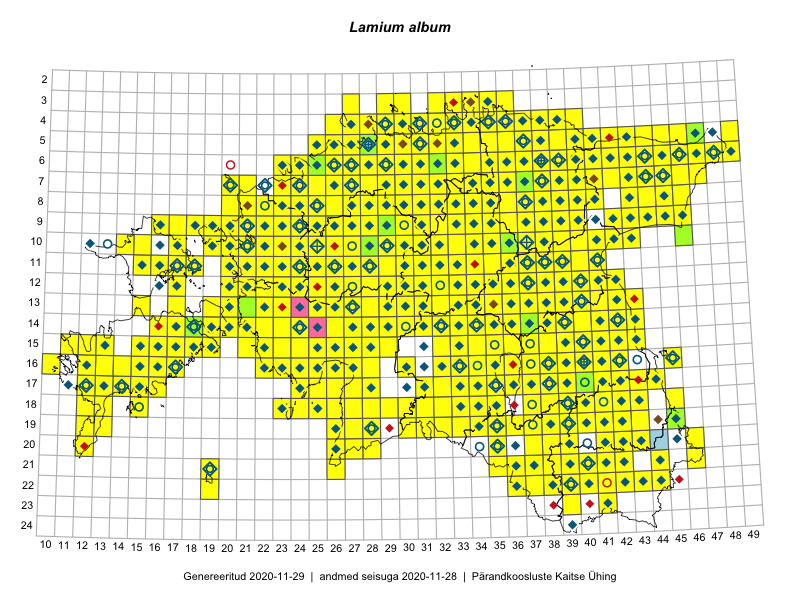

Lamium album
Uuendatud: 2016-12-02
Kaardile koondatud taksonid: Lamium album L.

Kaart põhineb 935 vaatlusel. Taksonit on leitud 427 ruudust.
Kuvatud viited 20 esimesele andmebaasikirjele, ülejäänud PlutoFis
- Malle Leht: 2015-05-22: : ala
- Malle Leht: 2015-05-16: : ala
- Tiit Hallikma, Toomas Kukk, Indrek Tammekänd: 2015-06-09: 12-28: ala
- Malle Leht: 2015-07-09: : ala
- Peedu Saar: 2015-05-09: 13-30: ala
- Peedu Saar, Timo Luhamäe: 2015-05-09: 12-28: ala
- Peedu Saar, Timo Luhamäe: 2015-05-10: 12-31: ala
- Peedu Saar, Timo Luhamäe: 2015-05-11: 11-36: ala
- Peedu Saar, Timo Luhamäe: 2015-05-11: 12-36: ala
- Peedu Saar, Timo Luhamäe: 2015-05-11: 12-37: ala
- Peedu Saar, Timo Luhamäe: 2015-05-12: 07-35: ala
- Peedu Saar, Timo Luhamäe: 2015-05-12: 07-36: ala
- Peedu Saar, Timo Luhamäe: 2015-05-13: 06-39: ala
- Peedu Saar, Timo Luhamäe: 2015-05-13: 06-40: ala
- Peedu Saar, Timo Luhamäe: 2015-05-13: 07-39: ala
- Peedu Saar: 2015-05-14: 09-43: ala
- Peedu Saar: 2015-05-14: 10-43: ala
- Peedu Saar: 2015-05-14: 10-42: ala
- Toomas Kukk, Thea Kull, Timo Luhamäe, Ott Luuk, Peedu Saar: 2015-06-29: 14-17: ala
- Peedu Saar, Liina Oja: 2015-05-22: 19-30: ala